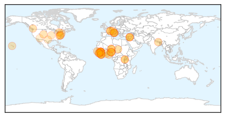

Unknown
30-Day Web Trend
0 alerts, 0 warnings
30-Day Twitter Trend
1 alerts, 0 warnings

Article Locations

Article Confidences

Top Articles:
- 0.999
- 3 cases of killer virus reported
- 0.999
- The Chosun Ilbo (English Edition): Daily News from Korea
- 0.996
- Three cases of MERS confirmed in South Korea
- 0.996
- South Korea confirms three cases of Middle East Respiratory Syndrome
- 0.992
- KBS World Radio
- 0.992
- CDC officials confirm third MERS case in the country-INSIDE Korea JoongAng Daily
- 0.991
- South Korea confirms third case of MERS
- 0.990
- The World On Arirang
- 0.985
- Three South Korea MERS cases have origin in GCC
- 0.983
- South Korea confirms second case of MERS virus; third case confirmed also (updated)
- 0.969
- South Korea confirms third case of MERS virus; 64 isolated
- 0.922
- Jamaica on high alert after outbreak of mosquito-borne Zika virus
- 0.917
- Chicago Tribune
- 0.917
- Chicago Tribune
- 0.917
- Chicago Tribune
- 0.917
- Chicago Tribune
- 0.917
- Chicago Tribune
- 0.917
- Chicago Tribune
- 0.917
- Chicago Tribune
- 0.917
- Chicago Tribune
- 0.917
- Chicago Tribune
- 0.917
- Chicago Tribune
- 0.917
- Chicago Tribune
- 0.917
- Chicago Tribune
- 0.917
- Chicago Tribune
- 0.917
- Chicago Tribune
- 0.917
- Chicago Tribune
- 0.917
- Chicago Tribune
- 0.917
- Chicago Tribune
- 0.917
- Chicago Tribune
- 0.917
- Chicago Tribune
- 0.917
- Chicago Tribune
- 0.917
- Chicago Tribune
- 0.917
- Chicago Tribune
- 0.917
- Chicago Tribune
- 0.910
- The world windows to Thailand
- 0.910
- The world windows to Thailand
- 0.910
- The world windows to Thailand
- 0.886
- Gray Fox Gets Bitten by a Rabid Bat Develops a New Strain of Rabies, Experts
- 0.882
- SoKor reports 1st case of MERS
- 0.880
- Las peores puntuaciones de España en la historia de Eurovisión « Telediaria
- 0.870
- Brucellosis infections spark warning for dog owners
- 0.825
- ZIKA VIRUS (ZikaV)
- 0.817
- WAFB 9 News Baton Rouge, Louisiana News, Weather, Sports
- 0.798
- Good news: E. coli cases falling
- 0.798
- $13 Million In Medical Aid From Stamford's AmeriCares Arrives in Nepal
- 0.775
- Iraq: Iraq: Mobile Medical Clinics response in Dahuk Governorate - April 2015
- 0.771
- Update on Whatcom County, WA Milk Makers Fest E. coli Outbreak
- 0.762
- New Rabies Strain Discovered in New Mexico, Public Health Vet Says It’s ‘Exciting’
- 0.755
- Korea reports MERS cases
Showing top 50 articles...
Top Tweets:
- 0.619
- La naturaleza no se hace responsable de ser muy complicada para el rendimiento cognitivo de nuestra especie.
- 0.574
- WHO Dr Chestnov: Key to prevent, control NCDs -Strong primary health care cvrge -Disease & risk factor monitoring -Cancer registries WHA68
Ebola
30-Day Web Trend
0 alerts, 1 warnings

30-Day Twitter Trend
0 alerts, 0 warnings

Article Locations
Article Confidences

Top Articles:
- 1.000
- Sonora / Tuolumne News, Sports, & Weather, Angels Camp, Twain Harte, Jamestown
- 1.000
- Sierra Leone berates Ebola quarantine escapees as cases surge
- 1.000
- Ebola Cases Surge in Guinea, Sierra Leone
- 1.000
- Sierra Leone berates Ebola quarantine escapees as cases surge
- 1.000
- Sierra Leone berates Ebola quarantine escapees as cases surge - Sierra Leone
- 0.999
- Ebola cases surge in Guinea, Sierra Leone
- 0.999
- What we didn't learn from the Ebola outbreak
- 0.999
- Sierra Leone Ebola Crisis: One year on, the road to recovery continues - Sierra Leone
- 0.998
- Sierra Leone berates Ebola quarantine escapees as cases surge
- 0.997
- AU-ASEOWA Mission Head Bids Farewell to Prez Sirleaf
- 0.993
- West Africa's health systems need financial backing to overcome Ebola epidemic
- 0.992
- UN health agency responds to Ebola spike by deploying team on border of Guinea and Guinea-Bissau
- 0.989
- Ebola Survivors Dying Of Hunger Commit Suicide
- 0.989
- How the world is wiping out killer diseases
- 0.987
- Sierra Leone: Sierra Leone berates Ebola quarantine escapees as cases surge
- 0.986
- Guinea President Thanks Cuba as Medics Prepare to Return Home
- 0.985
- Mike Fay: The five biggest health challenges today
- 0.984
- The other Grade 3 emergencies apart from Ebola
- 0.980
- WHO Calls For $100 Million Emergency Fund, Doctor 'SWAT Team'
- 0.978
- UNMEER boss lauds female journalists for campaign towards zero Ebola
- 0.975
- Too soon to celebrate
- 0.972
- WHO Calls For $100 Million Emergency Fund, Doctor 'SWAT Team'
- 0.968
- WHO Calls For $100 Million Emergency Fund, Doctor 'SWAT Team'
- 0.967
- Sierra Leone: Sierra Leone Ebola Crisis: One year on, the road to recovery continues
- 0.958
- Air France to resume flights to ebola-hit Sierra Leone
- 0.947
- Daily Exchange
- 0.947
- Guinea after Ebola « Afronline – The Voice Of Africa
- 0.938
- New smartphone app would track spread of Ebola
- 0.937
- NCHPAD Blog - Endless CapABILITIES
- 0.931
- Ebola vaccine trial hits Hohoe; GH¢200, phones for participants
- 0.929
- Assessment of the Impact of Ebola Virus Disease (EVD) in five districts in Sierra Leone - Sierra Leone
- 0.916
- Liberian now free to come to Quest
- 0.889
- World Health Assembly: Health Threats Don’t Recognize Borders
- 0.863
- Welcome to the Expotimes News
- 0.850
- Dr. Jeanne M. Novak, President & CEO of CBR International Corp.®, to attend World Health Organization (WHO) meeting
- 0.838
- May 21 news: WHO, childhood vaccine reduces cancer risk, healthy states for seniors, health workers under threat
- 0.830
- UH researcher working on Ebola vaccine
- 0.789
- Guinea: UN health agency responds to Ebola spike by deploying team on border of Guinea and Guinea-Bissau
- 0.735
- Taylor Application to Appeal Decision on his Motion for Transfer to Rwanda Denied
- 0.708
- Ebola Stigma Toolkit: Accepting and Supporting Ebola Survivors, Orphans and Families of Ebola Patients in the Community
- 0.680
- Columbia panelists agree there's nothing super about 'superbugs'
- 0.660
- Medical Missionary, Ebola Survivor Dr. Kent Brantly to Highlight FHU’s Annual Benefit Dinner
- 0.592
- Brazen attacks on health workers on rise, human rights groups say
- 0.586
- 20th CBRNE Soldiers help to halt Ebola in Liberia
- 0.576
- Liberia Ponders Site for National Ebola Monument
- 0.556
- ASU professor named most creative person for Ebola work
Top Tweets:
- 0.960
- Meet the Liberian Filmmakers Who Made Documentaries on the Ebola Outbreak - Huffington Post http://t.co/Ucc6tNAd8m ebola EVD
- 0.902
- UH researcher working on Ebola vaccine - Hawaii News Now http://t.co/UdogT4hOTF ebola EVD
- 0.891
- Liberia Ponders Site for National Ebola Monument - Voice of America http://t.co/k7sY1uPeE0 ebola EVD
- 0.865
- The other Grade 3 emergencies apart from Ebola - Devex http://t.co/a0qWcHvHBE ebola EVD
- 0.849
- New smartphone app would track spread of Ebola - University of Rochester Newsroom http://t.co/hoTciq1idJ ebola EVD
- 0.720
- Ebola survivor to speak at Freed-Hardeman University - Washington Times http://t.co/pjGVdsSZWy ebola EVD
- 0.715
- Baltimore Artist Creates Beautifully Bold School Murals In Liberia, Now Ebola-Free - Huffington Post http://t.co/sLCURPsJB3 ebola EVD
- 0.707
- Hot Zones: The Intersection of Corruption, Poor Governance and Ebola - Huffington Post http://t.co/IS8CcslSMY ebola EVD
- 0.696
- 21 May news on avianflu avianinfluenza Ebola EbolaResponse MERS NepalQuake WHA68 is here: http://t.co/cuCYk21Bve
- 0.684
- Meet the Liberian Filmmakers Who Made Documentaries on the Ebola Outbreak - Huffington Post http://t.co/ZqejzboJkQ
- 0.626
- We can’t tolerate any negligence says rep in Guinea of rising numbers of Ebola cases https://t.co/uN56ou0Sie EbolaResponse
- 0.591
- The orphans left behind from Ebola - http://t.co/Fv6J8mBKfu http://t.co/P332zPMTgj ebola EVD
- 0.558
- Desperate future for Ebola's orphans - http://t.co/Fv6J8mBKfu http://t.co/MztJhrlxBZ ebola EVD
- 0.531
- Ebola work at frontlines renewed CDC Emergency Responder Ron’s commitment to health & safety. DiseaseDetective http://t.co/tg8bejO86B